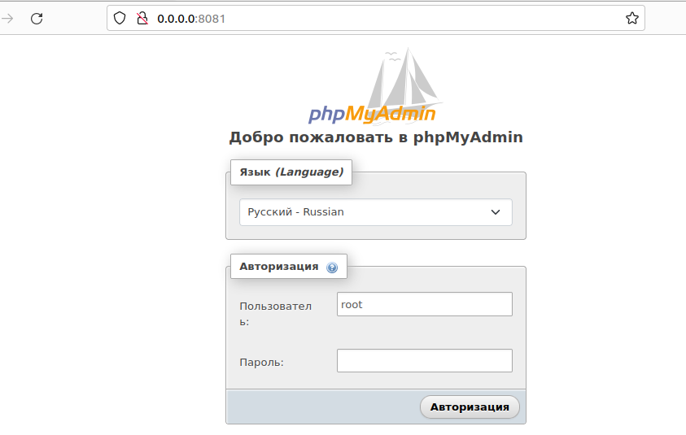

Контейнеризация.
Docker. Dockerfile
Заходим в контейнер
- docker run -it ubuntu:23.10 bash
внутри контейнера
- apt update
- apt install iproute2
- exit
- docker start ID - запускаем контейнер
- docker exec -it ID bash - зайти внутрь контейнера
- exit
- docker stop ID
- docker container rm ID
база данных mariadb
- cd /var/www/gb/docker
- mkdir mydb
- docker run --name mariadb-container-1 -d -v /var/www/gb/docker/mydb:/var/lib/mysql -e MARIADB_ROOT_PASSWORD=5645 mariadb:10.10.2
- docker ps
- docker exec -it ID bash
- mysql -u root -p
- exit
PHP MyAdmin
docker run --name myadmin-gb-1 -d --link mariadb-container-1:db -p 8081:80 phpmyadmin/phpmyadmin
в браузере

Спроси у яндекса
Google